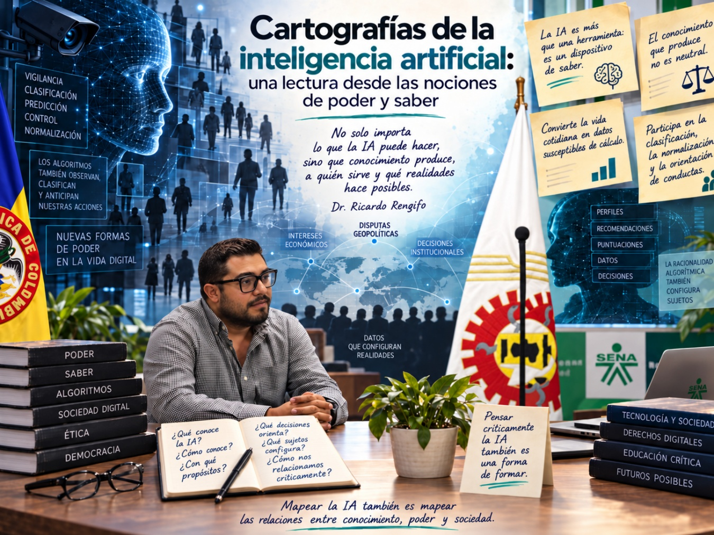
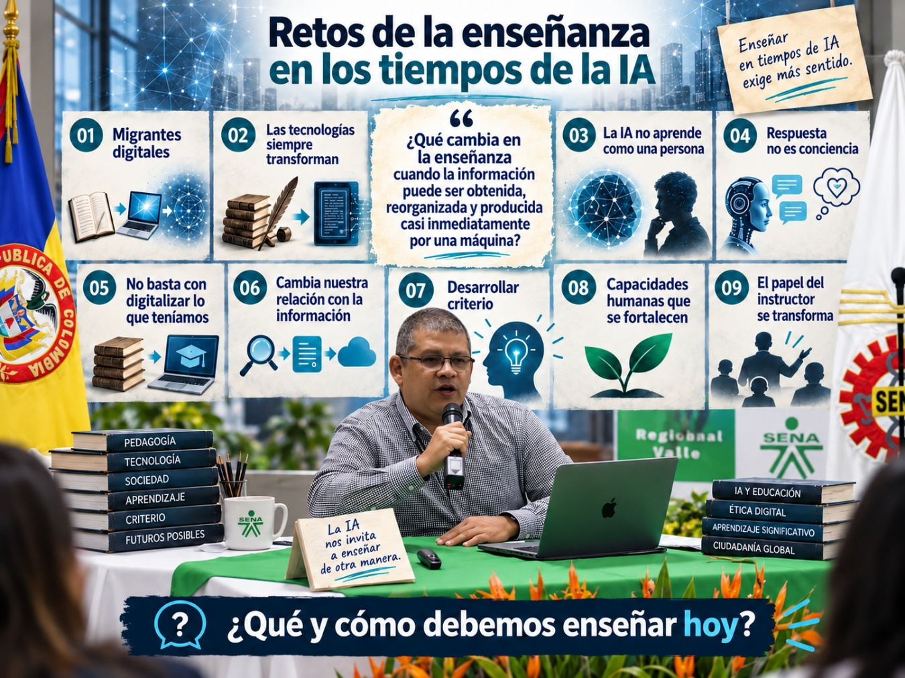

Eje Tecnología
4. Eje tecnología: pensar la inteligencia artificial más allá de la herramienta
Dos miradas sobre la inteligencia artificial: su relación con el poder y el saber y los desafíos que plantea para la enseñanza.
4. Eje tecnología: pensar la inteligencia artificial más allá de la herramienta
Las ponencias del eje tecnología invitan a desplazar la mirada de la inteligencia artificial como simple recurso técnico hacia las preguntas pedagógicas, éticas y sociales que emergen de su incorporación en la formación. Veamos:
4.1. Cartografías de la inteligencia artificial: poder, saber y subjetividad
La ponencia de Ricardo Rengifo propuso desplazar la mirada sobre la inteligencia artificial más allá de su dimensión técnica. Aporta al encuentro los siguientes ejes:
- La inteligencia artificial no es solamente una herramienta. también es un dispositivo de saber. Al clasificar, predecir y organizar información sobre personas y comportamientos, los sistemas de IA participan en la producción de determinadas formas de “verdad”. La pregunta deja de ser únicamente cómo utilizar la tecnología y se amplía hacia qué se conoce mediante ella, cómo se conoce y con qué propósitos.
- El conocimiento producido por la IA no es neutral. La ponencia señaló que los sistemas algorítmicos están atravesados por intereses económicos, institucionales y geopolíticos. Esto obliga a interrogar los criterios con los que se construyen, los datos que utilizan y las formas de realidad que terminan haciendo visibles o privilegiando.
- La racionalidad algorítmica convierte aspectos de la vida cotidiana en datos susceptibles de cálculo. El reconocimiento facial, las puntuaciones sociales, la personalización de contenidos y la predicción de conductas fueron utilizados para mostrar cómo los algoritmos pueden medir, jerarquizar y segmentar poblaciones, construyendo perfiles a partir de los cuales se anticipan comportamientos y decisiones.
- El poder algorítmico no actúa solamente después de que una persona decide. también intenta anticiparse a su conducta. Sistemas de recomendación, mecanismos de puntuación, reconocimiento facial o herramientas predictivas ejemplifican formas contemporáneas de gobierno de las conductas. Desde esta perspectiva, la IA no solo describe al sujeto, sino que puede contribuir a clasificarlo, normalizarlo y orientar anticipadamente sus posibilidades de acción.
- La vigilancia adquiere nuevas formas en los entornos digitales. La presentación relacionó estas transformaciones con nociones como sociedad disciplinaria, gubernamentalidad digital y panóptico digital. La cuestión planteada es cómo la capacidad de observar, registrar y procesar grandes cantidades de información modifica las relaciones entre visibilidad, conocimiento y poder.
- La vida cotidiana ya participa de estas formas de poder y saber. La ponencia abrió la reflexión preguntando por prácticas aparentemente habituales para mostrar que la racionalidad algorítmica no pertenece a un futuro lejano: ya interviene en la manera como vemos información, somos clasificados y nos relacionamos con el mundo digital.
- Pensar críticamente la IA implica preguntarse por sus efectos sociales y políticos. Las tensiones planteadas por el ponente Ricardo Rengifo amplían la discusión desde la eficacia de las herramientas hacia las condiciones en las que estas tecnologías participan en la configuración de sujetos, prácticas y sociedades.

Para el Eje Tecnología la ponencia nos deja un interrogante central: ¿cómo relacionarnos con ella sin reducir la discusión a aprender a utilizar sus herramientas?
4.2. Los retos de enseñar en tiempos de inteligencia artificial
La ponencia de Héctor Fabio Hoyos parte de una experiencia muy cercana a quienes hoy ejercen la docencia: muchos instructores pertenecen a una generación de “migrantes digitales”, formada en modelos educativos anteriores a la expansión de internet, las plataformas digitales y la inteligencia artificial. Esto supone enseñar en medio de una transformación tecnológica que ocurre a gran velocidad y que obliga a revisar prácticas que durante años parecieron estables.
El Ponente Héctor Fabio Hoyos propone no mirar la inteligencia artificial únicamente desde el entusiasmo ni desde el temor. Su intervención invita a comprender que las grandes transformaciones tecnológicas siempre han producido incertidumbre. Para ilustrarlo, recuerda que tecnologías hoy naturalizadas, como la escritura, también fueron vistas en determinados momentos como una amenaza para ciertas capacidades humanas.
Realizada la introducción, articula sus planteamientos a partir del cuestionamiento: ¿qué cambia en la enseñanza cuando la información puede ser obtenida, reorganizada y producida casi inmediatamente por una máquina?
Entre los principales aspectos de la ponencia pueden destacarse:
- La IA no aprende como aprende una persona. Los sistemas de inteligencia artificial identifican patrones a partir de grandes cantidades de datos. Aunque utilizamos expresiones como “aprendizaje de máquina”, el ponente llama la atención sobre la necesidad de distinguir los procesos computacionales de la experiencia humana de aprender.
- No debe confundirse capacidad de respuesta con conciencia. Una inteligencia artificial puede escribir con fluidez, sostener una conversación, utilizar expresiones cercanas e incluso parecer empática. Sin embargo, esa apariencia no significa necesariamente que comprenda, sienta o tenga conciencia de aquello que expresa. El ponente advierte sobre nuestra tendencia a atribuir características humanas a los sistemas tecnológicos.
- El problema no está solamente en la tecnología, sino en la forma como la incorporamos a la enseñanza. Hoyos muestra que una nueva herramienta no produce automáticamente una nueva pedagogía. La experiencia de la virtualidad permitió comprobar que, en muchas ocasiones, simplemente se trasladaron a medios digitales las mismas prácticas que ya existían. Como sintetiza una de sus diapositivas: en algunos casos, simplemente “digitalizamos lo que teníamos”.
- La inteligencia artificial cambia nuestra relación con la información. La red ya no solamente permite buscar o acceder a contenidos: ahora también puede responder, organizar, resumir y producir información. Por ello, el reto educativo deja de estar centrado exclusivamente en recordar o acumular datos.
- Aprender supone ahora desarrollar criterio frente a las respuestas disponibles. En las diapositivas finales, Hoyos propone acciones como interrogar, contextualizar, contrastar, verificar, curar, arbitrar y co-crear. Estas acciones muestran un desplazamiento pedagógico importante: pasar del acceso a la información hacia la capacidad de trabajar con ella, interpretarla y transformarla.
- La formación debe fortalecer capacidades propiamente humanas. Frente a sistemas capaces de generar respuestas con rapidez, adquieren mayor importancia el pensamiento crítico, la ética, la responsabilidad y la capacidad de tomar decisiones. La tarea educativa no consistiría entonces en competir con la máquina en velocidad o cantidad de información, sino en formar personas capaces de relacionarse críticamente con aquello que la tecnología produce.
- El papel del instructor no desaparece, pero sí necesita transformarse. La inteligencia artificial obliga a revisar qué significa enseñar cuando una respuesta puede obtenerse en segundos. El valor de la enseñanza empieza a situarse con mayor fuerza en la capacidad de acompañar procesos de comprensión, formular buenas preguntas, contextualizar, contrastar información, reconocer sesgos y ayudar a construir criterio.

En la ponencia se sitúa el desafío que representa la IA en el cómo conservar y fortalecer la dimensión humana de la enseñanza mientras incorporamos herramientas capaces de modificar profundamente nuestra relación con el conocimiento. Es así como queda una inquietud central para quienes ejercen el oficio de instructor:
¿qué debemos enseñar y qué tipo de experiencias de aprendizaje debemos construir para que nuestros aprendices desarrollen la capacidad de preguntar, comprender, contrastar, decidir y crear con criterio propio?
4.3. Las voces que ampliaron la conversación sobre tecnología
A partir de las intervenciones de los instructores asistentes pueden reconocerse los siguientes aportes:
- La enseñanza en el SENA está cambiando porque el entorno social y tecnológico también cambió. Las intervenciones de apoyo coinciden en que la formación ya no puede pensarse con los mismos supuestos de hace unos años. La transformación digital, la rapidez de los cambios y las nuevas realidades de los aprendices obligan a revisar la práctica pedagógica.
- La tecnología debe incorporarse como mediación pedagógica, no como sustituto del proceso formativo. Se plantea la idea de que herramientas como la inteligencia artificial, la gamificación o los recursos digitales no deben reemplazar la enseñanza, sino fortalecerla y ampliar sus posibilidades.
- El papel del instructor ya no se reduce a transmitir contenidos. Se insiste en que el instructor debe proponer y plantear experiencias de aprendizaje, orientar procesos, acompañar trayectorias y generar ambientes más activos y significativos para los aprendices.
- La innovación tecnológica debe equilibrarse con la formación humana. Una de las preocupaciones que atraviesa estos aportes es que la actualización tecnológica no puede hacerse a costa del pensamiento crítico, la autonomía o el sentido ético. La formación debe seguir reconociendo al aprendiz como persona, no solo como futuro trabajador.
- La enseñanza necesita mayor conexión con los contextos reales. Los aportes señalan que la formación debe responder tanto a los cambios del sector productivo como a las transformaciones culturales y sociales.
- La actualización docente es una exigencia permanente. Se advierte que las tecnologías y las prácticas sociales cambian tan rápido que el aula puede quedar desactualizada en poco tiempo.
- Las metodologías activas cobran mayor relevancia. Se valoran enfoques como la resolución de problemas, el aprendizaje por competencias y otras didácticas que favorecen participación, aplicabilidad, empleabilidad y emprendimiento. La tecnología tiene sentido cuando ayuda a que el aprendizaje sea más activo y pertinente.
- La inteligencia artificial plantea un reto pedagógico antes que solo técnico. En estas voces complementarias, la IA aparece menos como un asunto puramente instrumental y más como una oportunidad para preguntarse cómo enseñar mejor, cómo formar criterio y cómo evitar que la tecnología vacíe de sentido la experiencia educativa.
Para los participantes del Eje Tecnología, el problema principal no es simplemente “usar tecnología, sino ¿cómo integrarla de manera pedagógica, crítica y humana? Es esta la cuestión central que nos dejan sus aportes.
4.4. Preguntas, tensiones y posibilidades del eje Tecnología
El Eje Tecnología permitió ampliar la conversación más allá del uso instrumental de la inteligencia artificial. Las intervenciones de Ricardo Rengifo, Héctor Fabio Hoyos y otros participantes situaron la discusión en torno al conocimiento, la enseñanza, el poder, la ética y la dimensión humana, dejando interrogantes de relevancia para el encuentro:
- ¿La inteligencia artificial es solo una herramienta?
- ¿Qué ocurre cuando los algoritmos comienzan a orientar nuestras decisiones?
- ¿Qué significa enseñar cuando las respuestas están disponibles en segundos?
- ¿Incorporar tecnología significa transformar la pedagogía?
- ¿Una IA realmente aprende, comprende o siente?
- ¿La inteligencia artificial reemplazará al instructor?
- ¿Cómo responder a la velocidad del cambio tecnológico?
- ¿La tecnología se incorpora de la misma manera en todos los territorios?
- ¿Qué ocurre con los oficios frente a la automatización y la IA?
- ¿Qué capacidades humanas debemos fortalecer?
En conjunto, estas cuestiones muestran que el Eje Tecnología no se limitó a preguntar qué puede hacer la inteligencia artificial, sino también qué queremos hacer nosotros con ella y qué tipo de formación queremos construir. Nos queda como cuestionamiento central, el que, si bien, la inteligencia artificial transforma nuestra relación con el conocimiento, las decisiones y el aprendizaje, ¿cómo incorporarla a la formación sin perder el pensamiento crítico, la autonomía, la ética y la dimensión humana de la enseñanza?